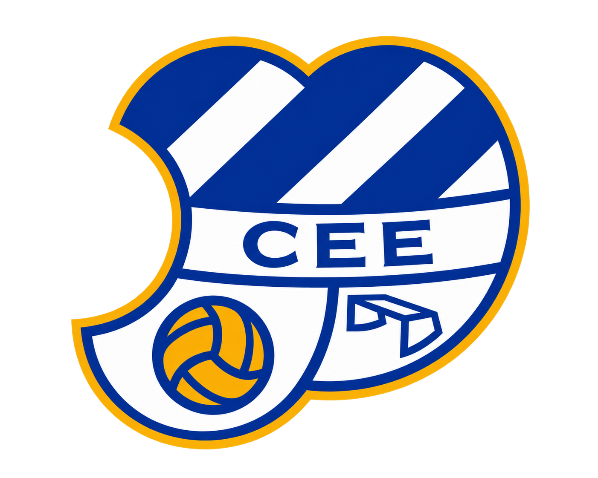

Primera Federació
Grup 2 · 38 partits de fase regular.

CE EUROPACalendari no oficial de la temporada ClassificacióTEMPORADA 2026/2027 · FUTBOL MASCULÍ
Primera Federació · Grup 2
Només partits de lliga regular. Subscriu-te una sola vegada i els partits, horaris, ajornaments i resultats s'actualitzaran automàticament al teu calendari.
CE EUROPA
Primera Federació · Grup 2
SEGUIMENT COMPLET
Un únic feed amb les 38 jornades, els horaris i la informació que canvia durant la temporada.
Grup 2 · 38 partits de fase regular.
SITUACIÓ ACTUAL
Carregant la classificació oficial…
| Pos. | Equip | PJ | G | E | P | DG | Pts |
|---|
UNA SOLA SUBSCRIPCIÓ
Afegeix el feed al teu calendari.
El partit apareix amb la informació disponible.
Els canvis futurs s'actualitzen automàticament.